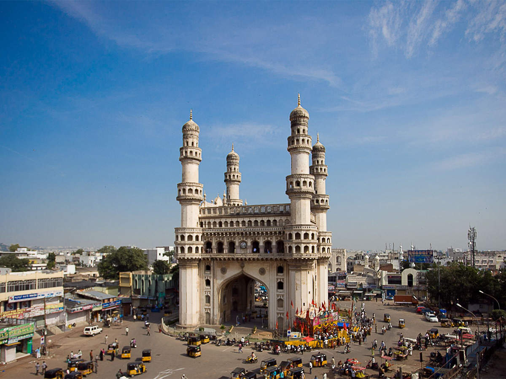

Taj Mahal
 Estimated-price:
Rs:200-500/-
Estimated-price:
Rs:200-500/-
One of the seven wonders of the world, the epitome of love, the Taj Mahal is a huge mausoleum of white marble in the district of Agra in Uttar Pradesh, India. It is one of the most famous buildings around the world which is visited by millions of tourists from across the world every year. A witness to the great historical happenings of the Mughal Era, this construction was built by the Mughal King Shahjahan in memory of his beloved wife Mumtaz Mahal.
Approx. 20,000 stone carvers, craftsperson, and artists were hired from different corners of the country along with artists from Iraq and Turkey. They worked for around 17 years at a stretch to give a shape to this wonder.
Mysore Palace
 Estimated-price:
Rs:400-800/-
Estimated-price:
Rs:400-800/-
Mysore Palace, also known as Amba Vilas Palace, is a historical palace and a royal residence (house). It is located in Mysore, Karnataka, India. It used to be the official residence of the Wadiyar dynasty and the seat of the Kingdom of Mysore. The palace is in the centre of Mysore, and faces the Chamundi Hills eastward. Mysore is commonly described as the 'City of Palaces', and there are seven palaces including this one. However, the Mysore Palace refers specifically to the one within the new fort.
The land on which the palace now stands was originally known as mysuru.Yaduraya built the first palace inside the Old Fort in the 14th century, which was set ablaze and reconstructed multiple times. The Old Fort was built of wood and thus easily caught fire, while the current fort was built of stone, bricks and wood. The current structure was constructed between 1897 and 1912, after the Old Palace burnt down, the current structure is also known as the New Fort.
Charminar

Estimated-price:
Rs:100-300/-
The Charminar ('four minarets') is a monument located in Hyderabad, Telangana, India. Constructed in 1591, the landmark is a symbol of Hyderabad and officially incorporated in the emblem of Telangana. The Charminar's long history includes the existence of a mosque on its top floor for more than 425 years. While both historically and religiously significant, it is also known for its popular and busy local markets surrounding the structure, and has become one of the most frequented tourist attractions in Hyderabad. Charminar is also a site of numerous festival celebrations, such as Eid-ul-adha and Eid al-Fitr, as it is adjacent to the city's main mosque, the Makkah Masjid.
The Charminar is situated on the east bank of Musi River. To the west lies the Laad Bazaar, and to the southwest lies the richly ornamented granite Makkah Masjid. It is listed as an archaeological and architectural treasure on the official list of monuments prepared by the Archaeological Survey of India.
Ajanta Caves
Estimated-price:
Rs:300-1000/-
Ajanta caves are the set of 29 Buddhist cave temples. Concealed away in the hills of North-west India, around 200 miles way from the busy roads of Mumbai, a superlative gemstone of art and religion is sited.
The Ajanta Caves shaped into the face of a mountain, appear as a horseshoe around the Wangorah River. These caves are the matchless epitomes of one of nation's distinctive artistic traditions- the rock cut temples. Some of these caves date back from the 2nd century BC. Comprising the Buddhist traditions of Theravada and Mahayana, Ajanta caves boast some of the most precious works of Buddhist art that is carved in it. These spellbinding caves are situated at 55 kms distance from the Jagaon city and just 105 kms away from Aurangabad, Maharashtra.
Goa
 Estimated-price:
Rs:4000-15000/-
Estimated-price:
Rs:4000-15000/-
Goa is a state on the southwestern coast of India. It is situated within the Konkan region, geographically separated from the Deccan highlands by the Western Ghats. It is bound by the Indian states of Maharashtra to the north, and Karnataka to the east and south, with the Arabian Sea in the west. It is India's smallest state by area and fourth-smallest by population. Goa has the highest GDP per capita among all Indian states, two and a half times as high as the GDP per capita of the country as a whole. The Eleventh Finance Commission of India named Goa the best-placed state because of its infrastructure, and India's National Commission on Population rated it as having the best quality of life in India (based on the commission's "12 Indicators"). It is the third-highest ranking among Indian states in the human development index.
Hawa Mahal
 Estimated-price:
Rs:200-800/-
Estimated-price:
Rs:200-800/-
The Hawa Mahal is a palace in the city of Jaipur, India. Built from red and pink sandstone, it is on the edge of the City Palace, Jaipur, and extends to the Zenana, or women's chambers.
The structure was built in 1799 by the Maharaja Sawai Pratap Singh, grandson of Maharaja Sawai Jai Singh, the founder of the city of jhunjhunu Rajasthan . He was so inspired by the unique structure of Khetri Mahal that he built this grand and historical palace.
It was designed by Lal Chand Ustad. Its five-floor exterior is akin to a honeycomb with its 953 small windows called Jharokhas decorated with intricate latticework. The original intent of the lattice design was to allow royal ladies to observe everyday life and festivals celebrated in the street below without being seen.
Meenakshi Amman Temple
Estimated-price:
Rs:100-500/-
Arulmigu Meenakshi Sundaraswarar Temple is a historic Hindu temple located on the southern bank of the Vaigai River in the temple city of Madurai, Tamil Nadu, India. It is dedicated to the goddess Meenakshi, a form of Shakti, and her consort, Sundareshwarar, a form of Shiva. The temple is at the center of the ancient temple city of Madurai mentioned in the Tamil Sangam literature, with the goddess temple mentioned in 6th-century-CE texts. This temple is one of the Paadal Petra Sthalams, which are 275 temples of Shiva that are revered in the verses of Tamil Saiva Nayanars of 6th-9th century CE.
The west tower (gopuram) of the temple is the model based on which the Tamil Nadu State Emblem is designed.
Tirupathi
 Estimated-price:
Rs:4000-17000/-
Estimated-price:
Rs:4000-17000/-
Tirupati is a city in the Indian state of Andhra Pradesh. It is the administrative headquarters of the Tirupati district. The city is home to the important Hindu shrine of Tirumala Venkateshwara Temple and other historic temples It is located at a distance of 150 km from Chennai, 250 km from Bangalore. It is one of the eight Svayam vyakta kshetras (Self-Manifested Temples) dedicated to Vishnu. Tirupati is a municipal corporation and the headquarters of Tirupati (urban) mandal, Tirupati (rural) mandal, and the Tirupati revenue division.
It is the 7th most urban agglomerated city in the state, with a population of 459,985 in 2011 and around 1,004,615 in 2021. As of 2011 census, it had a population of 287,035 making it the 9th most populous city in Andhra Pradesh. It is the second biggest city in Rayalaseema after Kurnool. For the year 2012–2013, India's Ministry of Tourism named Tirupati as the "Best Heritage City".
Gateway of Mumbai
Estimated-price:
Rs:100-200/-
The Gateway of India is an arch-monument built in the early 20th century in the city of Mumbai (Bombay), India. It was erected to commemorate the landing of King-Emperor George V, the first British monarch to visit India, in December 1911 at Strand Road near Wellington Fountain.
The foundation stone was laid in March 1913 for a monument built in the Indo-Islamic style, inspired by elements of 16th-century Gujarati architecture. The final design of the monument by architect George Wittet was sanctioned only in 1914, and construction was completed in 1924. The structure is a memorial arch made of basalt, which is 26 metres (85 feet) high, with an architectural resemblance to a triumphial arch as well as Gujarati architecture of the time.
Harmandir Sahib
Estimated-price:
Rs:100-500/-
The Golden Temple also known as harmandir sahib is a gurdwara located in the city of Amritsar, Punjab, India. It is the preeminent spiritual site of Sikhism. It is one of the holiest sites in Sikhism, alongside the Gurdwara Darbar Sahib Kartarpur in Kartarpur, and Gurdwara Janam Asthan in Nankana Sahib.
The man-made pool on the site of the temple was completed by the fourth Sikh Guru, Guru Ram Das, in 1577. In 1604, Guru Arjan Dev, the fifth Sikh Guru, placed a copy of the Adi Granth in Harmandir Sahib and is the prominent figure in development of gurudwara who built it in the 16th Century.
Kailasa Temple
Estimated-price:
Rs:1000-2000/-
The Kailasha or Kailashanatha temple is the largest of the rock-cut Hindu temples at the Ellora Caves near Sambhaji Nagar in Aurangabad district of Maharashtra, India. A megalith carved from a rock cliff face, it is considered as one of the most remarkable cave temples in the world because of its size, architecture and sculptural treatment, and "the climax of the rock-cut phase of Indian architecture". The top of the superstructure over the sanctuary is 32.6 metres (107 ft) above the level of the court below, although the rock face slopes downwards from the rear of the temple to the front. Archaeologists believe it is made from a single rock.
The Kailasa temple (Cave 16) is the largest of the 34 Hindu, Buddhist and Jain cave temples and monasteries known collectively as the Ellora Caves, ranging for over two kilometres (1.2 mi) along the sloping basalt cliff at the site. Most of the excavation of the temple is generally attributed to the eighth century Rashtrakuta king Krishna I (756-773), with some elements completed later.
Varanasi
Estimated-price:
Rs:15000-25000/-
Varanasi also Banaras or Benares and Kashi is a metropolis city on the Ganges river in the Bhojpur-Purvanchal region of Uttar Pradesh, India. Considered to be a holy city; that has a central place in the traditions of pilgrimage, death, and mourning in the Hindu world. Located in the middle-Ganges valley in the southeastern part of the state of Uttar Pradesh, Varanasi lies on the left bank of the river. It is 692 kilometres (430 mi) to the southeast of India's capital New Delhi and 320 kilometres (200 mi) to the east of the state capital, Lucknow. It lies 121 kilometres (75 mi) downstream of Prayagraj, where the confluence with the Yamuna river is another major Hindu pilgrimage site.
Varanasi is one of the world's oldest continually inhabited cities. Kashi, its ancient name, was associated with a kingdom of the same name of 2,500 years ago.
Srinagar
Estimated-price:
Rs:20000-25000/-
Srinagar is the largest city and the summer capital of Jammu and Kashmir, a region administered by India as a union territory and part of the larger disputed region of Kashmir. It lies in the Himalayan Kashmir Valley on the banks of the Jhelum River, and Dal and Anchar lakes, between the Hari Parbat and Shankaracharya hills. The city is known for its natural environment, various gardens, waterfronts and houseboats. It is also known for traditional Kashmiri handicrafts like the Kashmir shawl (made of pashmina and cashmere wool), papier-mâché, wood carving, carpet weaving, and jewel making, as well as for dried fruits. It is the 31st-most populous city in India, the northernmost city in India to have over one million people, and the second-largest metropolitan area in the Himalayas (after Kathmandu, Nepal).
Founded in the 6th century during the rule of the Gonanda dynasty according to the Rajatarangini, the city took on the name of an earlier capital thought to have been founded by the Mauryas in its vicinity.
Golconda
Estimated-price:
Rs:1000-2000/-
Golconda is a historic fortress and ruined city located in the western outskirts of Hyderabad, Telangana, India.It was originally called Mankal. The fort was originally built by Kakatiya ruler Pratāparudra in the 11th century out of mud walls. It was ceded to the Bahmani Kings by Deo Rai, Rajah of Warangal during the reign of Sultan Muhammad Shah of the Bahmani Sultanate. Following the death of Sultan Mahmood Shah, the Sultanate disintegrated and Sultan Quli, who had been appointed as the Governor of Hyderabad by the Bahmani Kings, fortified city and made it the capital of the Golconda Sultanate. Because of the vicinity of diamond mines, especially Kollur Mine, Golconda flourished as a trade centre of large diamonds known as Golconda Diamonds. Golconda fort is currently abandoned and in ruins.
The complex was put by UNESCO on its "tentative list" to become a World Heritage Site in 2014, with others in the region, under the name Monuments and Forts of the Deccan Sultanate.